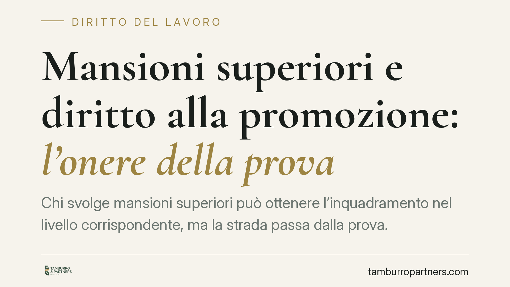

Mansioni superiori e diritto alla promozione: l'onere della prova
Chi svolge mansioni superiori può ottenere l'inquadramento nel livello corrispondente, ma la strada passa dalla prova. Secondo l'orientamento consolidato, è il lavoratore a dover dimostrare i presupposti del diritto: l'effettivo svolgimento delle mansioni, la loro continuità e l'assenza di cause che ne escludono il consolidamento. Un tema che tocca aspettative di carriera e organizzazione aziendale.

Il contesto
La rivendicazione dell'inquadramento superiore è tra le controversie più frequenti nel diritto del lavoro. Il dipendente che, di fatto, svolge compiti più qualificati di quelli formalmente attribuiti chiede il riconoscimento del livello corrispondente e le relative differenze retributive.
Il punto critico non è tanto il diritto in sé, quanto la sua dimostrazione in giudizio. L'orientamento della giurisprudenza di legittimità è costante nel collocare l'onere della prova a carico di chi agisce, cioè del lavoratore. Non basta affermare di aver lavorato "come un quadro": occorre provarlo, con elementi concreti e verificabili.
Inquadramento normativo
La disciplina è contenuta nell'art. 2103 del codice civile, riscritto dall'art. 3 del D.Lgs. 15 giugno 2015, n. 81 (uno dei decreti attuativi del cosiddetto Jobs Act).
La norma prevede che l'assegnazione a mansioni superiori diventi definitiva quando queste siano svolte in modo continuativo per un periodo di sei mesi, salvo un diverso termine — anche più breve o più lungo — fissato dalla contrattazione collettiva applicabile. Trascorso tale periodo, il lavoratore matura il diritto all'inquadramento nel livello superiore.
È prevista però un'eccezione rilevante: il consolidamento non opera quando l'assegnazione avviene per sostituire un altro lavoratore che ha diritto alla conservazione del posto (ad esempio, per malattia, maternità, aspettativa). In questi casi la copertura è per definizione temporanea e non genera automaticamente il diritto alla promozione.
Cosa deve provare il lavoratore
Su questo assetto normativo si innesta il tema probatorio. Chi rivendica l'inquadramento superiore deve dimostrare almeno tre elementi:
- di aver effettivamente svolto le mansioni superiori, e non compiti solo occasionalmente più complessi;
- la continuità dello svolgimento per il periodo richiesto dalla legge o dal contratto collettivo;
- l'assenza delle cause di esclusione, in particolare che non si trattasse di una sostituzione di un collega con diritto alla conservazione del posto.
Da qui una questione ricorrente: la frammentazione degli incarichi. Può accadere che l'organizzazione aziendale suddivida mansioni superiori tra più dipendenti, o le alterni nel tempo, in modo tale da impedire il maturarsi dei sei mesi continuativi in capo a un singolo lavoratore. Quando questa frammentazione risponde a esigenze organizzative reali è legittima; quando invece è costruita al solo scopo di eludere il consolidamento del diritto, può assumere carattere abusivo. Anche in questo caso, però, è il lavoratore a dover fornire gli elementi che rendano plausibile l'intento elusivo.
Implicazioni pratiche
Per il lavoratore, il messaggio è netto: le aspettative di carriera non si difendono con le sole allegazioni. Servono documenti, testimonianze e riscontri organizzativi. La memoria dei fatti, da sola, raramente regge in giudizio.
Per il datore di lavoro, il tema è opposto ma speculare. Una gestione ordinata degli incarichi — con causali chiare per le sostituzioni temporanee e una tracciabilità delle assegnazioni — riduce il rischio di contenzioso e consente di difendere le proprie scelte organizzative.
La distinzione tra sostituzione temporanea e assegnazione stabile diventa quindi decisiva: da un lato esclude il consolidamento, dall'altro va documentata con precisione, perché è proprio su questo crinale che si gioca la controversia.
Cosa fare in concreto
- Raccogli la documentazione che attesti le mansioni effettivamente svolte: ordini di servizio, email, deleghe, comunicazioni interne, procedure firmate.
- Ricostruisci l'organigramma e la tua collocazione al suo interno, individuando il livello contrattuale corrispondente alle attività svolte.
- Verifica le sostituzioni temporanee: annota se stavi coprendo l'assenza di un collega e per quale causa, perché questo incide sul diritto al consolidamento.
- Controlla il CCNL applicabile, che può fissare un termine di consolidamento diverso dai sei mesi previsti dal codice civile.
- Formalizza per iscritto ogni richiesta al datore di lavoro, così da fissare una data certa e un riscontro documentale.
È opportuno valutare la solidità del quadro probatorio prima di avviare qualsiasi iniziativa: la fondatezza della pretesa, sul piano sostanziale, dipende in larga misura da ciò che si è in grado di dimostrare.
---
*Contributo informativo a cura di Tamburro & Partners - Avv. Giuseppe Tamburro. Non costituisce parere legale.*
Ogni storia di lavoro ha i suoi tempi.
Se gestisci HR e vuoi un confronto su contenzioso, ispezioni o licenziamenti, scrivi allo studio. Ti rispondiamo entro un giorno lavorativo.